5. Assignment 2 - Controlling Arduinos with an Android Tablet
We will now learn how to control an Arduino board with a tablet. The example to follow is the [client-android-skel] project from the course (see paragraph 2).
5.1. Project Architecture
The entire project will have the following architecture:
|
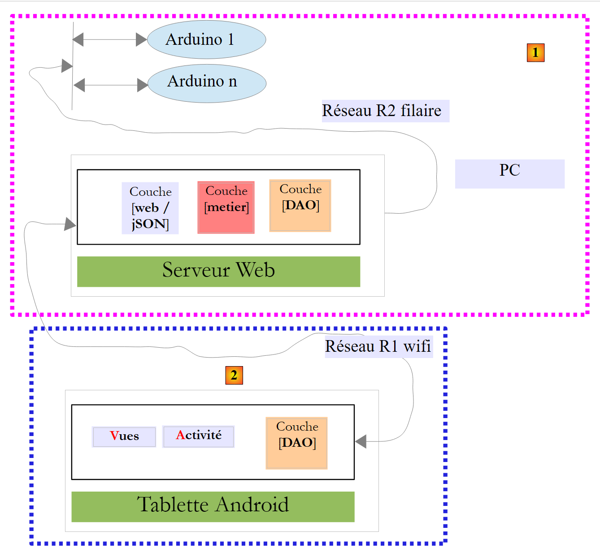 |
- Block [1], the web server/JSON and Arduinos, will be provided to you;
- you will need to build block [2], the Android tablet program to communicate with the web server / JSON.
5.2. Hardware
The following components are available to you:
- an Arduino with an Ethernet shield, an LED, and a temperature sensor;
- a miniHub to share with another student;
- a USB cable to power the Arduino;
- two network cables to connect the Arduino and the PC to the same private network;
- an Android tablet;
5.2.1. The Arduino

|
Here’s how to connect the various components together:
- disconnect the network cable from your PC;
- Connect your PC and the Arduino using a network cable;
- The Arduino you have will already be programmed. Its IP address will be [192.168.2.2]. For your PC to recognize the Arduino, you must assign it an IP address on the [192.168.2] network. The Arduinos have been programmed to communicate with a PC with the IP address [192.168.2.1]. Here’s how to do it:
Go to [Control Panel\Network and Internet\Network and Sharing Center]:

|

|
- In [1], click the [Local Area Network] link;
- in [2], click the [Properties] button for the local network;

|

|
- in [3], click the [IPv4] properties of the [Local Area Connection] adapter;
- in [4], assign this adapter the IP address [192.168.2.1] and the subnet mask [255.255.255.0];
- in [5], click [OK] as many times as necessary to exit the wizard.
5.2.2. The tablet
- Using your Wi-Fi adapter, connect your computer to the Wi-Fi network we will provide. Do the same with your tablet;
- Check your PC’s Wi-Fi IP address by typing [ipconfig] in a Command Prompt window. You will find an address like [192.168.x.y];
dos>ipconfig Windows IP Configuration Wi-Fi wireless network adapter: Connection-specific DNS suffix . . . : Local-link IPv6 address. . . . .: fe80::39aa:47f6:7537:f8e1%2 IPv4 address. . . . . . . . . . . . . .: 192.168.1.25 Subnet mask. . . . . . . . . : 255.255.255.0 Default gateway. . . . . . . . . : 192.168.1.1 - Check your tablet’s Wi-Fi IP address. Ask your instructor how to do this if you’re unsure. You’ll find an address like [192.168.x.z];
- Disable your PC’s firewall if it is active [Control Panel\System and Security\Windows Firewall];
- In a Command Prompt window, verify that the PC and tablet can communicate by typing the command [ping 192.168.x.z], where [192.168.x.z] is your tablet’s IP address. The tablet should then respond:
dos>ping 192.168.1.26 Sending a 'Ping' request to 192.168.1.26 with 32 bytes of data: Response from 192.168.1.26: bytes=32 time=102 ms TTL=64 Response from 192.168.1.26: bytes=32 time=134 ms TTL=64 Response from 192.168.1.26: bytes=32 time=168 ms TTL=64 Response from 192.168.1.26: bytes=32 time=208 ms TTL=64 Ping statistics for 192.168.1.26: Packets: sent = 4, received = 4, lost = 0 (0% loss), Approximate round-trip times in milliseconds: Minimum = 102 ms, Maximum = 208 ms, Average = 153 ms
Your system's network configuration is now ready.
5.2.3. The [Genymotion] emulator
The [Genymotion] emulator (see Section 6.9) is a great alternative to a tablet. It’s almost as fast and doesn’t require a Wi-Fi connection. We recommend using this method. You can use the tablet for the final testing of your app.
5.3. Programming Arduinos
Here we focus on writing C code for Arduinos:

|
See also
- Installing the Arduino development IDE (see Section 6.1);
- Using JSON libraries (Appendices, Section 6.6);
- In the Arduino IDE, test the example of a TCP server (e.g., the web server) and that of a TCP client (e.g., the Telnet client);
- the appendices on the Arduino programming environment in section 6.1.

|
An Arduino is a set of pins connected to hardware. These pins are inputs or outputs. Their values are binary or analog. To control the Arduino, there are two basic operations:
- writing a binary/analog value to a pin identified by its number;
- read a binary/analog value from a pin identified by its number;
To these two basic operations, we will add a third:
- making an LED blink for a certain duration and at a certain frequency. This operation can be performed by repeatedly calling the two previous basic operations. However, we will see in the tests that the exchanges between the [DAO] layer and an Arduino take on the order of a second. It is therefore not possible to make an LED blink every 100 milliseconds, for example. So we will implement this blinking function on the Arduino itself.
The Arduino will operate as follows:
- Communication between the [DAO] layer and an Arduino takes place via a TCP-IP network through the exchange of text lines in JSON (JavaScript Object Notation) format;
- at startup, the Arduino connects to port 100 of a registration server located in the [DAO] layer. It sends a single line of text to the server:
This is a JSON string describing the Arduino that is connecting:
- id: an identifier for the Arduino;
- desc: a description of what the Arduino can do. Here, we have simply specified the Arduino model;
- mac: the Arduino's MAC address;
- port: the port number on which the Arduino will wait for commands from the [DAO] layer.
All this information is in string format except for the port, which is an integer.
- Once the Arduino has registered with the registration server, it begins listening on the port it specified to the server (102 above). It waits for JSON commands in the following format:
This is a JSON string with the following elements:
- id: an identifier for the command. Can be anything;
- ac: an action. There are three:
- pw (pin write) to write a value to a pin,
- pr (pin read) to read the value from a pin,
- cl (blink) to make an LED blink;
- pa: the action’s parameters. These depend on the action.
- The Arduino always returns a response to its client. This is a JSON string in the following format:
where
- id: the identifier of the command being responded to;
- er (error): an error code if an error occurred, 0 otherwise;
- et (status): a dictionary that is always empty except for the read command pr. The dictionary then contains the value of pin number x that was requested.
Here are some examples to clarify the previous specifications:
Make LED #8 blink 10 times with a period of 100 milliseconds:
|
Command |
|
|
Response |
|
The parameters for the cl command are: the duration (dur) of a flash in milliseconds, the number (nb) of flashes, and the pin number of the LED.
Write the binary value 1 to pin 7:
|
Command |
|
|
Response |
|
The pa parameters of the pw command are: the write mode mod (b for binary or a for analog), the value val to be written, and the pin number. For a binary write, val is 0 or 1. For an analog write, val is in the range [0,255].
Write the analog value 120 to pin 2:
|
Command |
|
|
Response |
|
Read the analog value from pin 0:
|
Command |
|
|
Response |
|
The pa parameters of the pr command are: the reading mode (binary or analog), and the pin number. If there is no error, the Arduino places the value of the requested pin in the "et" key of its response. Here, pin0 indicates that the value of pin 0 was requested, and 1023 is that value. In read mode, an analog value will be in the range [0, 1024].
We have introduced the three commands cl, pw, and pr. One might wonder why we didn’t use more explicit fields in the JSON strings—such as action instead of ac, pinwrite instead of pw, and parameters instead of pa. An Arduino has very limited memory. However, the JSON strings exchanged with the Arduino contribute to memory usage. We therefore chose to shorten them as much as possible.
Now let’s look at a few error cases:
|
Command |
|
|
Response |
|
A command was sent that is not in JSON format. The Arduino returned error code 100.
|
Command |
|
|
Response |
|
A pr command was sent without the pin parameter. The Arduino returned error code 302.
|
Command |
|
|
Response |
|
We sent an unknown pinread command (it’s pr). The Arduino returned error code 104.
We will not continue with the examples. The rule is simple. The Arduino must not crash, regardless of the command sent to it. Before executing a JSON command, it ensures that the command is valid. As soon as an error occurs, the Arduino stops executing the command and returns the JSON error string to its client. Again, because memory space is limited, we return an error code rather than a full message.
The code for the program running on the Arduino is provided in the examples in this document:

|
To transfer it to the Arduino:
- Connect it to your PC;

|
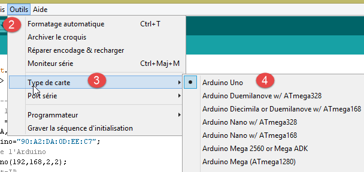 |
- in [1], open the file [arduino_uno.ino]. The Arduino IDE will launch and load the file;
Note: The code was originally created and tested with Arduino IDE 1.5.x. Since then, other versions of the IDE have been released. The code did not work with Arduino IDE 1.6.x. It appears there is a backward compatibility issue between versions 1.6 and 1.5.
- In [2-4], specify the type of Arduino used;
|
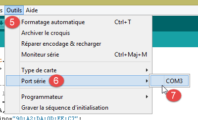 |

|
- In [5-7], specify which serial port on the PC it is connected to;
- in [8], upload the [arduino_uno] program to the Arduino;
The program code is heavily commented. Interested readers may refer to it. We simply highlight the lines of code that configure the bidirectional client/server communication between the Arduino and the PC:
#include <SPI.h>
#include <Ethernet.h>
#include <ajSON.h>
// ---------------------------------- ARDUINO UNO CONFIGURATION
// Arduino UNO MAC address
byte macArduino[] = {
0x90, 0xA2, 0xDA, 0x0D, 0xEE, 0xC7 };
char * strMacArduino="90:A2:DA:0D:EE:C7";
// Arduino IP address
IPAddress ipArduino(192, 168, 2, 2);
// its identifier
char * idArduino="kitchen";
// Arduino server port
int ArduinoPort = 102;
// Arduino description
char * descriptionArduino="home automation control";
// The Arduino server will run on port 102
EthernetServer server(ArduinoPort);
// IP address of the registration server
IPAddress recordingServerIP(192, 168, 2, 1);
// Registration server port
int recordingServerPort = 100;
// Arduino client for the recording server
EthernetClient ArduinoClient;
// client command
char command[100];
// the Arduino's response
char message[100];
// initialization
void setup() {
// The serial monitor will allow you to follow the exchanges
Serial.begin(9600);
// Start the Ethernet connection
Ethernet.begin(macArduino, ipArduino);
// Available memory
Serial.print(F("Available memory: "));
Serial.println(freeRam());
}
// infinite loop
void loop()
{
...
}
- Line 8: the Arduino's MAC address. It doesn't matter much here because the Arduino will be on a private network with a PC and one or more Arduinos. The MAC address simply needs to be unique on this private network. Normally, the Arduino’s network board has a sticker indicating the board’s MAC address. If this sticker is missing and you don’t know the board’s MAC address, you can enter whatever you want on line 8 as long as the rule of MAC address uniqueness on the private network is followed;
- line 11: the card’s IP address. Again, you can enter any value of the form [192.168.2.x] and vary the x for the different Arduinos on the private network;
- Line 13: Arduino identifier. Must be unique among the identifiers of Arduinos on the same private network;
- line 15: the Arduino’s service port. You can enter whatever you want;
- line 17: description of the Arduino’s function. You can enter whatever you want. Be careful with long strings due to the Arduino’s limited memory;
- line 21: IP address of the Arduino’s logging server on the PC. Must not be modified;
- line 23: port for this logging service. Must not be changed;
5.4. The Web/JSON Server
5.4.1. Installation

The Java binary for the web/jSON server is provided:

|
Open a command prompt and type the following command:
If [java.exe] is not in the command prompt’s PATH, you will need to type the full path to [java.exe] (usually C:\Program Files\java...).
A DOS window will open and display logs:
. ____ _ __ _ _
/\\ / ___'_ __ _ _(_)_ __ __ _ \ \ \ \
( ( )\___ | '_ | '_| | '_ \/ _` | \ \ \ \
\\/ ___)| |_)| | | | | || (_| | ) ) ) )
' |____| .__|_| |_|_| |_\__, | / / / /
=========|_|==============|___/=/_/_/_/
:: Spring Boot :: (v0.5.0.M6)
2014-01-06 11:11:35.550 INFO 8408 --- [ main] arduino.rest.metier.Application : Starting Application on Gportpers3 with PID 8408 (C:\Users\SergeTahÚ\Desktop\part2\server.jar started by ST)
2014-01-06 11:11:35.587 INFO 8408 --- [ main] ationConfigEmbeddedWebApplicationContext : Refreshing org.springframework.boot.context.embedded.AnnotationConfigEmbeddedWebApplicationContext@6a4ba620: startup date [Mon Jan 06 11:11:35 CET 2014]; root of context hierarchy
2014-01-06 11:11:36.765 INFO 8408 --- [ main] org.apache.catalina.core.StandardService : Starting Tomcat service
2014-01-06 11:11:36.766 INFO 8408 --- [ main] org.apache.catalina.core.StandardEngine : Starting Servlet Engine: Apache Tomcat/7.0.42
2014-01-06 11:11:36.876 INFO 8408 --- [ost-startStop-1] o.a.c.c.C.[Tomcat].[localhost].[/] : Initializing Spring embedded WebApplicationContext
2014-01-06 11:11:36.877 INFO 8408 --- [ost-startStop-1] o.s.web.context.ContextLoader : Root WebApplicationContext: initialization completed in 1293 ms
2014-01-06 11:11:37.084 INFO 8408 --- [ost-startStop-1] o.a.c.c.C.[Tomcat].[localhost].[/] : Initializing Spring FrameworkServlet 'dispatcherServlet'
2014-01-06 11:11:37.084 INFO 8408 --- [ost-startStop-1] o.s.web.servlet.DispatcherServlet : FrameworkServlet 'dispatcherServlet': initialization started
2014-01-06 11:11:37.184 INFO 8408 --- [ost-startStop-1] o.s.w.s.handler.SimpleUrlHandlerMapping : Mapped URL path [/**/favicon.ico] onto handler of type [class org.springframework.web.servlet.resource.ResourceHttpRequestHandler]
2014-01-06 11:11:37.386 INFO 8408 --- [ost-startStop-1] s.w.s.m.m.a.RequestMappingHandlerMapping : Mapped "{[/arduinos/blink/{idCommande}/{idArduino}/{pin}/{duree}/{nombre}],methods=[GET],params=[],headers=[],consumes=[],produces=[],custom=[]}" onto public java.lang.String arduino.rest.metier.RestMetier.makeLEDBlink(java.lang.String,java.lang.String,java.lang.String,java.lang.String,java.lang.String,javax.servlet.http.HttpServletResponse)
2014-01-06 11:11:37.388 INFO 8408 --- [ost-startStop-1] s.w.s.m.m.a.RequestMappingHandlerMapping : Mapped "{[/arduinos/commands/{idArduino}],methods=[POST],params=[],headers=[],consumes=[],produces=[],custom=[]}" onto public java.lang.String arduino.rest.metier.RestMetier.sendCommandesJson(java.lang.String,java.lang.String,javax.servlet.http.HttpServletResponse)
2014-01-06 11:11:37.388 INFO 8408 --- [ost-startStop-1] s.w.s.m.m.a.RequestMappingHandlerMapping : Mapped "{[/arduinos/],methods=[GET],params=[],headers=[],consumes=[],produces=[],custom=[]}" onto public java.lang.String arduino.rest.metier.RestMetier.getArduinos(javax.servlet.http.HttpServletResponse)
2014-01-06 11:11:37.389 INFO 8408 --- [ost-startStop-1] s.w.s.m.m.a.RequestMappingHandlerMapping : Mapped "{[/arduinos/pinRead/{idCommande}/{idArduino}/{pin}/{mode}],methods=[GET],params=[],headers=[],consumes=[],produces=[],custom=[]}" onto public java.lang.String arduino.rest.metier.RestMetier.pinRead(java.lang.String,java.lang.String,java.lang.String,java.lang.String,javax.servlet.http.HttpServletResponse)
2014-01-06 11:11:37.390 INFO 8408 --- [ost-startStop-1] s.w.s.m.m.a.RequestMappingHandlerMapping : Mapped "{[/arduinos/pinWrite/{idCommande}/{idArduino}/{pin}/{mode}/{value}],methods=[GET],params=[],headers=[],consumes=[],produces=[],custom=[]}" onto public java.lang.String arduino.rest.metier.RestMetier.pinWrite(java.lang.String,java.lang.String,java.lang.String,java.lang.String,java.lang.String,javax.servlet.http.HttpServletResponse)
2014-01-06 11:11:37.463 INFO 8408 --- [ost-startStop-1] o.s.w.s.handler.SimpleUrlHandlerMapping : Mapped URL path [/**] onto handler of type [class org.springframework.web.servlet.resource.ResourceHttpRequestHandler]
2014-01-06 11:11:37.464 INFO 8408 --- [ost-startStop-1] o.s.w.s.handler.SimpleUrlHandlerMapping : Mapped URL path [/webjars/**] onto handler of type [class org.springframework.web.servlet.resource.ResourceHttpRequestHandler]
2014-01-06 11:11:37.881 INFO 8408 --- [ost-startStop-1] o.s.web.servlet.DispatcherServlet : FrameworkServlet 'dispatcherServlet': initialization completed in 796 ms
Recording server started on 192.168.2.1:100
2014-01-06 11:11:38.101 INFO 8408 --- [ Thread-4] arduino.dao.Recorder : Recorder : [11:11:38:101] : [Recording server: waiting for a client]
2014-01-06 11:11:38.142 INFO 8408 --- [ main] arduino.rest.metier.Application : Started Application in 3.257 seconds
- line 11: an embedded Tomcat server is launched;
- line 15: the Spring MVC servlet [dispatcherServlet] is loaded and executed;
- line 18: the REST URL [/arduinos/blink/{commandId}/{ArduinoId}/{pin}/{duration}/{count}] is detected;
- line 19: the REST URL [/arduinos/commands/{idArduino}] is detected;
- line 20: the REST URL [/arduinos/] is detected;
- line 21: the REST URL [/arduinos/pinRead/{commandId}/{ArduinoId}/{pin}/{mode}] is detected;
- line 22: the REST URL [/arduinos/pinWrite/{commandId}/{ArduinoId}/{pin}/{mode}/{value}] is detected;
- line 26: the Arduino logging server is launched;
Connect your Arduino to the PC if you haven't already. The PC's firewall must be disabled. Then, in a web browser, enter the URL [http://localhost:8080/arduinos]:

|
You should see the ID of the connected Arduino appear. If nothing appears, try resetting the Arduino. It has a reset button for this purpose.
The web/JSON server is now installed.
5.4.2. The URLs exposed by the web/JSON service
See: project [Example-15] (see section 1.16.1);
The web/JSON service was implemented using Spring MVC and exposes the following URLs:
@Controller
public class WebController {
// business layer
@Autowired
private IBusinessModel businessModel;
// list of Arduinos
@RequestMapping(value = "/arduinos", method = RequestMethod.GET, produces = MediaType.APPLICATION_JSON_VALUE)
@ResponseBody
public String getArduinos() throws JsonProcessingException {
...
}
// blinking
@RequestMapping(value = "/arduinos/blink/{commandId}/{ArduinoId}/{pin}/{duration}/{count}", method = RequestMethod.GET, produces = MediaType.APPLICATION_JSON_VALUE)
@ResponseBody
public String makeLEDBlink(@PathVariable("commandId") String commandId, @PathVariable("ArduinoId") String ArduinoId, @PathVariable("pin") int pin, @PathVariable("duration") int duration, @PathVariable("count") int count) throws JsonProcessingException {
...
}
// sending JSON commands
@RequestMapping(value = "/arduinos/commands/{idArduino}", method = RequestMethod.POST, produces = MediaType.APPLICATION_JSON_VALUE, consumes = MediaType.APPLICATION_JSON_VALUE)
@ResponseBody
public String sendJSONCommands(@PathVariable("idArduino") String idArduino, HttpServletRequest request) throws IOException {
...
}
// read pin
@RequestMapping(value = "/arduinos/pinRead/{idCommande}/{idArduino}/{pin}/{mode}", method = RequestMethod.GET, produces = MediaType.APPLICATION_JSON_VALUE)
@ResponseBody
public String pinRead(@PathVariable("idCommande") String idCommande, @PathVariable("idArduino") String idArduino, @PathVariable("pin") int pin, @PathVariable("mode") String mode) throws JsonProcessingException {
....
}
// write pin
@RequestMapping(value = "/arduinos/pinWrite/{idCommande}/{idArduino}/{pin}/{mode}/{value}", method = RequestMethod.GET, produces = MediaType.APPLICATION_JSON_VALUE)
@ResponseBody
public String pinWrite(@PathVariable("idCommande") String idCommande, @PathVariable("idArduino") String idArduino, @PathVariable("pin") int pin, @PathVariable("mode") String mode, @PathVariable("value") int value) throws JsonProcessingException {
...
}
}
Responses sent by the server are JSON representations of the following [Response<T>] class:
package client.android.dao.service;
import java.util.List;
public class Response<T> {
// ----------------- properties
// operation status
private int status;
// any status messages
private List<String> messages;
// response body
private T body;
// constructors
public Response() {
}
public Response(int status, List<String> messages, T body) {
this.status = status;
this.messages = messages;
this.body = body;
}
// getters and setters
...
}
The URL [/arduinos] returns a response of type [Response<List<Arduino>>], where [Arduino] is the following class:
package android.arduinos.entities;
import java.io.Serializable;
public class Arduino implements Serializable {
// data
private String id;
private String description;
private String mac;
private String ip;
private int port;
// getters and setters
...
}
- line 7: [id] is the Arduino's identifier;
- line 8: its description;
- line 9: its MAC address;
- line 10: its IP address;
- line 11: the port on which it listens for commands;
The URLs:
- [/arduinos/blink/{commandId}/{ArduinoId}/{pin}/{duration}/{count}];
- [/arduinos/pinRead/{commandId}/{ArduinoId}/{pin}/{mode}] ;
- [/arduinos/pinWrite/{commandId}/{ArduinoId}/{pin}/{mode}/{value}] ;
- [/arduinos/commands/{ArduinoID}];
return a response of type [Response<ArduinoResponse>], where the [ArduinoResponse] class represents the standard Arduino response:
public class ArduinoResponse implements Serializable {
private String json;
private String id;
private String error;
private Map<String, Object> status;
// getters and setters
...
}
- [json]: the JSON string sent by an Arduino that could not be decoded (in case of an error), null otherwise;
- [id]: the identifier of the command to which the Arduino is responding;
- [error]: an error code, 0 if OK, otherwise something else;
- [status]: a dictionary containing the response specific to the command. It is usually empty unless the command requested the reading of a value from the Arduino, in which case that value will be placed in this dictionary;
5.4.3. Web service / JSON testing
Get familiar with the web server / JSON by testing the following URLs:
|
|
|
|
|
|
|
|
|
|
|
|
|
|
Here are some screenshots of what you should see:
Get the list of connected Arduinos:

|
The JSON string received from the web server / JSON is an object with the following fields:
- [status]: 0 indicates no error—otherwise, an error occurred;
- [messages]: a list of messages explaining the error if an error occurred:
- [body]: the list of Arduinos if no error occurred. Each Arduino is then described by an object with the following fields:
- [id]: the Arduino’s identifier. No two Arduinos can have the same identifier;
- [description]: a short description of the Arduino’s functionality;
- [mac]: the Arduino's MAC address;
- [ip]: the Arduino's IP address;
- [port]: the port on which it listens for commands;
Make the LED on pin 8 of the Arduino identified by [cuisine] blink 20 times every 100 ms:

|
The JSON string received from the web server / JSON is an object with the following fields:
- [status]: 0 indicates no error—otherwise, an error occurred;
- [messages]: a list of messages explaining the error if an error occurred:
- [body]: the Arduino's response if there was no error:
- [id]: command identifier. This identifier is the 1 in [/blink/1]. The Arduino includes this command identifier in its response;
- [error]: an error number. A value other than 0 indicates an error;
- [state]: used only for reading a pin. Its value is the pin’s value;
- [json]: used only in the event of a JSON error between the client and the server. Its value is the erroneous JSON string sent by the Arduino;
Analog reading of pin 0 on the Arduino identified by [kitchen]:

|
The JSON string received from the web server /json is similar to the previous one, with the exception of the [state] field, which represents the value of pin 0.
Binary reading of pin 5 on the Arduino identified by [kitchen]:

|
The JSON string received from the /json web server is similar to the previous one.
Binary write of the value 1 to pin 8 of the Arduino identified by [kitchen]:

|
The JSON string received from the /json web server is similar to the previous one.
Testing the URL [http://localhost:8080/arduinos/commands/cuisine] is more complicated. The web server’s /jSON method that handles this URL expects a POST request, which cannot be easily simulated using a browser. To test this URL, you can use a Chrome browser with the [Advanced REST Client] extension (see section 6.13):

|
- in [1], the URL of the web/JSON method to be tested;
- in [2], the POST method to send the request;
- in [3-4], the posted value is JSON;
- in [5], the JSON string being posted. Note the square brackets that begin and end the list. Here, the list contains only one JSON command that makes pin 8 blink 10 times every 100 ms;
- in [6], the request is sent;

|
- in [7], the JSON response sent by the server. The object received an object with the two usual fields [status, messages] and a [body] field whose value is the list of Arduino responses to each of the JSON commands sent.
Let’s see what happens when we send a JSON command with incorrect syntax to the Arduino:

|
We then receive the following response:
|
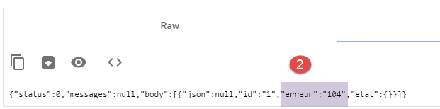 |
We can see that in the Arduino’s response, the error code is [104], indicating that the [xx] command was not recognized.
5.5. Android Client Testing

|
The finished Android client executable is provided below:
|
|
Use the mouse to drag the [app-debug.apk] file above onto a tablet emulator [GenyMotion]. It will then be saved and executed. Also launch the web/jSON server if you haven’t already done so. Connect the Arduino to the PC with an LED attached to it. The Android client allows you to manage Arduinos remotely. It displays the following screens to the user.
The [CONFIG] tab allows you to connect to the server and retrieve the list of connected Arduinos:

- In [1], enter the IP address [192.168.2.1] assigned to your PC (see section 5.2).
The [PINWRITE] tab allows you to write a value to an Arduino pin:


The [PINREAD] tab allows you to read the value from an Arduino pin:
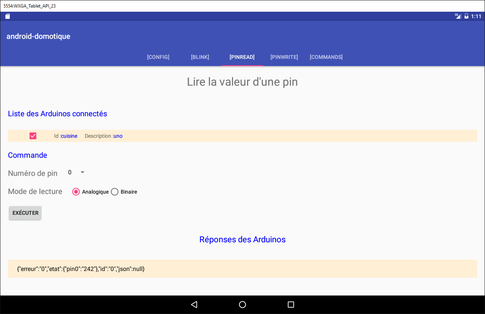
The [BLINK] tab allows you to make an Arduino LED blink:

The [COMMAND] tab allows you to send a JSON command to an Arduino:

5.6. The Android client for the web service / JSON
We will now discuss writing the Android client.
5.6.1. Client architecture
The architecture of the Android client will be that of the [Example-15] project (see section 1.16.2);

|
- the [DAO] layer communicates with the web/JSON server;
The Android client must be able to control multiple Arduinos simultaneously. For example, we want to be able to make two LEDs on two Arduinos blink at the same time, not one after the other. Therefore, our Android client will use one asynchronous task per Arduino, and these tasks will run in parallel.
5.6.2. The Android Studio client project
Duplicate the [client-android-skel] project (see section 2) into the [client-arduinos-01] project (if necessary, review how to duplicate a Gradle project in section 1.15):
5.6.3. The five XML views

|
There will be five XML views:
- [blink]: to make an Arduino LED blink. It is associated with the [BlinkFragment] fragment;
- [commands]: to send a JSON command to an Arduino. It is associated with the [CommandsFragment] fragment;
- [config]: to configure the web service/JSON URL and retrieve the initial list of connected Arduinos. It is associated with the [ConfigFragment] fragment;
- [pinread]: to read the binary or analog value of an Arduino pin. It is associated with the [PinReadFragment] fragment;
- [pinwrite]: to write a binary or analog value to an Arduino pin. It is associated with the [PinWriteFragment] fragment;
For now, these five XML views will all have the same empty content:
<?xml version="1.0" encoding="utf-8"?>
<ScrollView xmlns:android="http://schemas.android.com/apk/res/android"
android:id="@+id/scrollView1"
android:layout_width="wrap_content"
android:layout_height="wrap_content">
<RelativeLayout xmlns:android="http://schemas.android.com/apk/res/android"
android:layout_width="match_parent"
android:layout_height="match_parent">
</RelativeLayout>
</ScrollView>
- The view is inside a [RelativeLayout] container (lines 7–10), which is itself contained within a [ScrollView] container (lines 2–11). This ensures that we can scroll the view if it exceeds the size of a tablet screen;
5.6.4. The fragment menu
We know that fragments in a project built with [client-android-skel] must be associated with a menu, even if it is empty. Here, the app will not have a menu. The empty menu is already in the project;

|
5.6.5. The five fragments of the app

|

|
The [ConfigFragment] fragment has the following skeleton:
package client.android.fragments.behavior;
import client.android.R;
import client.android.architecture.core.AbstractFragment;
import client.android.architecture.custom.CoreState;
import client.android.fragments.state.DummyFragmentState;
import org.androidannotations.annotations.EFragment;
import org.androidannotations.annotations.OptionsMenu;
@EFragment
@OptionsMenu(R.menu.menu_vide)
public class ConfigFragment extends AbstractFragment {
// Fields inherited from the parent class -------------------------------------------------------
...
Replace line 10 with the following line:
@EFragment(R.layout.config)
|
Fragment |
View |
|
ConfigFragment |
|
|
PinReadFragment |
|
|
PinWriteFragment |
|
|
CommandsFragment |
|
|
BlinkFragment |
|
5.6.6. Fragment states

|
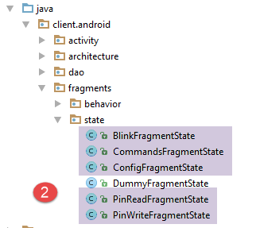 |
Each fragment will have a state.
5.6.7. Project customization

|
The [architecture / custom] package contains the customizable elements of the application architecture.
5.6.7.1. The [IMainActivity] interface
The [IMainActivity] interface defines what fragments can request from the activity as well as the application constants. This interface will be as follows:
package client.android.architecture.custom;
import client.android.architecture.core.ISession;
import client.android.dao.service.IDao;
public interface IMainActivity extends IDao {
// access to the session
ISession getSession();
// change view
void navigateToView(int position, ISession.Action action);
// wait management
void beginWaiting();
void cancelWaiting();
// application constants -------------------------------------
// debug mode
boolean IS_DEBUG_ENABLED = true;
// maximum wait time for server response
int TIMEOUT = 1000;
// wait time before executing the client request
int DELAY = 000;
// Basic authentication
boolean IS_BASIC_AUTHENTIFICATION_NEEDED = false;
// fragment adjacency
int OFF_SCREEN_PAGE_LIMIT = 1;
// tab bar
boolean ARE_TABS_NEEDED = true;
// loading image
boolean IS_WAITING_ICON_NEEDED = true;
// number of fragments
int FRAGMENTS_COUNT = 5;
// number of views
int VIEW_CONFIG = 0;
int VIEW_BLINK = 1;
int VIEW_PINREAD = 2;
int VIEW_PINWRITE = 3;
int VIEW_COMMANDS = 4;
}
- lines 25, 28, 31, 40: configuration of the [DAO] layer. This application queries a web/JSON server;
- line 37: this application has tabs;
- line 43: this application has five fragments;
- lines 46–50: the numbers of the five fragments;
- line 34: fragment adjacency. The developer can set a value here within the range [1, FRAGMENTS_COUNT-1];
5.6.7.2. The [CoreState] class
The [CoreState] class is the parent class of fragment states:
package client.android.architecture.custom;
import client.android.architecture.core.MenuItemState;
import client.android.fragments.state.*;
import com.fasterxml.jackson.annotation.JsonIgnoreProperties;
import com.fasterxml.jackson.annotation.JsonSubTypes;
import com.fasterxml.jackson.annotation.JsonTypeInfo;
@JsonIgnoreProperties(ignoreUnknown = true)
@JsonTypeInfo(use = JsonTypeInfo.Id.NAME, include = JsonTypeInfo.As.PROPERTY)
@JsonSubTypes({
@JsonSubTypes.Type(value = ConfigFragmentState.class),
@JsonSubTypes.Type(value = BlinkFragmentState.class),
@JsonSubTypes.Type(value = PinReadFragmentState.class),
@JsonSubTypes.Type(value = PinWriteFragmentState.class),
@JsonSubTypes.Type(value = CommandsFragmentState.class)}
)
public class CoreState {
// fragment visited or not
protected boolean hasBeenVisited = false;
// state of the fragment's menu (if any)
protected MenuItemState[] menuOptionsState;
// getters and setters
...
}
- lines 12–16: the state classes for the five fragments must be declared here;
5.6.8. The [MainActivity] class

|
The [MainActivity] class will be as follows:
package client.android.activity;
import android.support.design.widget.TabLayout;
import android.util.Log;
import client.android.R;
import client.android.architecture.core.AbstractActivity;
import client.android.architecture.core.AbstractFragment;
import client.android.architecture.core.ISession;
import client.android.architecture.custom.IMainActivity;
import client.android.architecture.custom.Session;
import client.android.dao.entities.Arduino;
import client.android.dao.entities.ArduinoCommand;
import client.android.dao.entities.ArduinoResponse;
import client.android.dao.service.Dao;
import client.android.dao.service.IDao;
import client.android.dao.service.Response;
import client.android.fragments.behavior.*;
import org.androidannotations.annotations.Bean;
import org.androidannotations.annotations.EActivity;
import org.androidannotations.annotations.OptionsMenu;
import rx.Observable;
import java.util.List;
import java.util.Locale;
@EActivity
@OptionsMenu(R.menu.menu_main)
public class MainActivity extends AbstractActivity {
// [DAO] layer
@Bean(Dao.class)
protected IDao dao;
// session
private Session session;
// parent class methods -----------------------
@Override
protected void onCreateActivity() {
// log
if (IS_DEBUG_ENABLED) {
Log.d(className, "onCreateActivity");
}
// session
this.session = (Session) super.session;
// create the five tabs
for (int i = 0; i < 5; i++) {
TabLayout.Tab newTab = tabLayout.newTab();
newTab.setText(getFragmentTitle(i));
tabLayout.addTab(newTab);
}
}
@Override
protected IDao getDao() {
return dao;
}
@Override
protected AbstractFragment[] getFragments() {
return new AbstractFragment[]{new ConfigFragment_(), new BlinkFragment_(), new PinReadFragment_(), new PinWriteFragment_(), new CommandsFragment_()};
}
@Override
protected CharSequence getFragmentTitle(int position) {
Locale l = Locale.getDefault();
switch (position) {
case 0:
return getString(R.string.config_title).toUpperCase(l);
case 1:
return getString(R.string.blink_title).toUpperCase(l);
case 2:
return getString(R.string.pinread_title).toUpperCase(l);
case 3:
return getString(R.string.pinwrite_title).toUpperCase(l);
case 4:
return getString(R.string.commands_title).toUpperCase(l);
}
return null;
}
@Override
protected void navigateOnTabSelected(int position) {
// display fragment position
navigateToView(position, ISession.Action.NAVIGATION);
}
@Override
protected int getFirstView() {
return IMainActivity.VUE_CONFIG;
}
// IDao implementation -----------------------------------------
}
- lines 46–50: creation of the application’s five tabs;
- line 48: the tab titles are provided by the method in lines 63-79;
- the five fragments are instantiated on line 60. Due to the AA annotations, the fragment classes are those presented previously, suffixed with an underscore;
- lines 63-79: a title is defined for each fragment. These titles will be retrieved from the file [res/values/strings.xml]

|
The content of [strings.xml] is as follows:
<?xml version="1.0" encoding="utf-8"?>
<resources>
<!-- application name -->
<string name="app_name">[arduinos-client-01]</string>
<!-- Fragments and tabs -->
<string name="config_title">[Config]</string>
<string name="blink_title">[Blink]</string>
<string name="pinread_title">[PinRead]</string>
<string name="pinwrite_title">[PinWrite]</string>
<string name="commands_title">[Commands]</string>
</resources>
Run the project. You should see the following view on the emulator:

Examine the logs that accompanied the display of the first view and track the various steps that were executed. Switch between tabs and continue to follow the logs.
5.6.9. The [config] XML view
The [config] XML view will look like this:
|
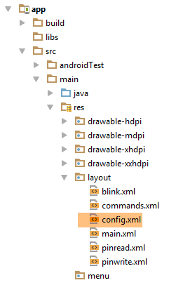 |

|
The view above is generated by the following XML code:
<?xml version="1.0" encoding="utf-8"?>
<ScrollView xmlns:android="http://schemas.android.com/apk/res/android"
android:id="@+id/scrollView1"
android:layout_width="wrap_content"
android:layout_height="wrap_content">
<RelativeLayout
android:layout_width="match_parent"
android:layout_height="match_parent">
<TextView
android:id="@+id/txt_TitreConfig"
android:layout_width="wrap_content"
android:layout_height="wrap_content"
android:layout_alignParentTop="true"
android:layout_centerHorizontal="true"
android:layout_marginTop="150dp"
android:text="@string/txt_TitreConfig"
android:textSize="@dimen/title"/>
<TextView
android:id="@+id/txt_UrlServiceRest"
android:layout_width="wrap_content"
android:layout_height="wrap_content"
android:layout_alignParentLeft="true"
android:layout_below="@+id/txt_TitreConfig"
android:layout_marginTop="50dp"
android:text="@string/txt_UrlServiceRest"
android:textSize="20sp"/>
<EditText
android:id="@+id/edt_UrlServiceRest"
android:layout_width="300dp"
android:layout_height="wrap_content"
android:layout_alignBaseline="@+id/txt_UrlServiceRest"
android:layout_alignBottom="@+id/txt_UrlServiceRest"
android:layout_marginLeft="20dp"
android:layout_toRightOf="@+id/txt_UrlServiceRest"
android:ems="10"
android:hint="@string/hint_UrlServiceRest"
android:inputType="textUri">
<requestFocus/>
</EditText>
<TextView
android:id="@+id/txt_MsgErreurIpPort"
android:layout_width="wrap_content"
android:layout_height="wrap_content"
android:layout_alignParentLeft="true"
android:layout_below="@+id/txt_UrlServiceRest"
android:layout_marginTop="20dp"
android:text="@string/txt_MsgErreurUrlServiceRest"
android:textColor="@color/red"
android:textSize="20sp"/>
<TextView
android:id="@+id/txt_arduinos"
android:layout_width="wrap_content"
android:layout_height="wrap_content"
android:layout_alignParentLeft="true"
android:layout_below="@+id/txt_MsgErreurIpPort"
android:layout_marginTop="40dp"
android:text="@string/title_arduinos_list"
android:textColor="@color/blue"
android:textSize="20sp"/>
<Button
android:id="@+id/btn_Refresh"
android:layout_width="wrap_content"
android:layout_height="wrap_content"
android:layout_alignBaseline="@+id/txt_arduinos"
android:layout_alignBottom="@+id/txt_arduinos"
android:layout_marginLeft="20dp"
android:layout_toRightOf="@+id/txt_arduinos"
android:text="@string/btn_refresh"/>
<Button
android:id="@+id/btn_Cancel"
android:layout_width="wrap_content"
android:layout_height="wrap_content"
android:layout_alignBaseline="@+id/txt_arduinos"
android:layout_alignBottom="@+id/txt_arduinos"
android:layout_marginLeft="20dp"
android:layout_toRightOf="@+id/txt_arduinos"
android:text="@string/btn_cancel"
android:visibility="invisible"/>
<ListView
android:id="@+id/ListViewArduinos"
android:layout_width="match_parent"
android:layout_height="200dp"
android:layout_alignParentLeft="true"
android:layout_below="@+id/txt_arduinos"
android:layout_marginTop="30dp"
android:background="@color/wheat">
</ListView>
</RelativeLayout>
</ScrollView>
The view uses strings (android:text on lines 15, 25, 37, 50, 61, 73) that are defined in the [res/values/strings] file:

|
<?xml version="1.0" encoding="utf-8"?>
<resources>
<string name="app_name">android-home-automation</string>
<!-- Fragments and tabs -->
<string name="config_title">[Config]</string>
<string name="blink_title">[Blink]</string>
<string name="pinread_title">[PinRead]</string>
<string name="pinwrite_title">[PinWrite]</string>
<string name="commands_title">[Commands]</string>
<!-- Config -->
<string name="txt_ConfigTitle">Connect to the server</string>
<string name="txt_UrlServiceRest">Web service URL / JSON</string>
<string name="txt_MsgErreurUrlServiceRest">The service URL must be entered in the format IP1.IP2.IP3.IP4:Port/context</string>
<string name="hint_UrlServiceRest">e.g. (192.168.1.120:8080/rest)</string>
<string name="btn_cancel">Cancel</string>
<string name="btn_refresh">Refresh</string>
<string name="title_list_arduinos">List of Connected Arduinos</string>
</resources>
The view uses colors (android:textColor on lines 51 and 62) defined in the [res/values/colors] file:

|
<?xml version="1.0" encoding="utf-8"?>
<resources>
<color name="colorPrimary">#3F51B5</color>
<color name="colorPrimaryDark">#303F9F</color>
<color name="colorAccent">#FF4081</color>
<color name="floral_white">#FFFAF0</color>
<!-- app -->
<color name="red">#FF0000</color>
<color name="blue">#0000FF</color>
<color name="wheat">#FFEFD5</color>
</resources>
The view uses dimensions (android:textSize on line 16) that are defined in the [res/values/dimens] file:
|
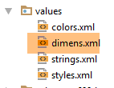 |
<resources>
<!-- Default screen margins, per the Android Design guidelines. -->
<dimen name="activity_horizontal_margin">16dp</dimen>
<dimen name="activity_vertical_margin">16dp</dimen>
<dimen name="fab_margin">16dp</dimen>
<dimen name="appbar_padding_top">8dp</dimen>
<!-- app -->
<dimen name="title">30dp</dimen>
</resources>
This technique has not been used for all dimensions. However, it is the recommended approach. It allows you to change dimensions in a single location.
Run your project again. You should see the following view:

5.6.10. The [ConfigFragment] fragment

|
To handle the new [config] view, the code for the [ConfigFragment] fragment changes as follows:
package client.android.fragments.behavior;
import android.view.View;
import android.widget.Button;
import android.widget.EditText;
import android.widget.ListView;
import android.widget.TextView;
import client.android.R;
import client.android.architecture.core.AbstractFragment;
import client.android.architecture.custom.CoreState;
import client.android.architecture.custom.IMainActivity;
import client.android.fragments.state.ConfigFragmentState;
import org.androidannotations.annotations.Click;
import org.androidannotations.annotations.EFragment;
import org.androidannotations.annotations.OptionsMenu;
import org.androidannotations.annotations.ViewById;
@EFragment(R.layout.config)
@OptionsMenu(R.menu.menu_empty)
public class ConfigFragment extends AbstractFragment {
// UI elements
@ViewById(R.id.btn_Refresh)
protected Button btnRefresh;
@ViewById(R.id.btn_Cancel)
protected Button btnCancel;
@ViewById(R.id.edt_UrlServiceRest)
protected EditText edtUrlServiceRest;
@ViewById(R.id.txt_IPPortErrorMessage)
protected TextView txtRestServiceErrorMessage;
@ViewById(R.id.ListViewArduinos)
protected ListView listArduinos;
@Click(R.id.btn_Refresh)
protected void refresh() {
}
// Fragment lifecycle management -------------------------------------
@Override
public CoreState saveFragment() {
return new ConfigFragmentState();
}
@Override
protected int getNumView() {
return IMainActivity.VUE_CONFIG;
}
@Override
protected void initFragment(CoreState previousState) {
}
@Override
protected void initView(CoreState previousState) {
// First visit?
if(previousState==null){
txtMsgErreurUrlServiceRest.setVisibility(View.INVISIBLE);
}
}
@Override
protected void updateOnSubmit(CoreState previousState) {
}
@Override
protected void updateOnRestore(CoreState previousState) {
}
@Override
protected void notifyEndOfUpdates() {
// buttons
initButtons();
}
@Override
protected void notifyEndOfTasks(boolean runningTasksHaveBeenCanceled) {
}
// private methods --------------------------------------------
private void initButtons() {
// The [Run] button replaces the [Cancel] button
btnCancel.setVisibility(View.INVISIBLE);
btnRefresh.setVisibility(View.VISIBLE);
}
}
- lines 23–32: the visual interface elements;
- lines 58–60: on the first visit to the fragment, the error message is hidden;
- lines 73–76: each time the fragment is displayed, the [Cancel] button is hidden (line 82) and the [Refresh] button is displayed (lines 86–87). In fact, in this application, a fragment cannot be displayed while an asynchronous operation is in progress, and therefore the [Cancel] button is visible;
Run this new version. The first view should now look like this:

5.6.10.1. The [Refresh] button
For now, we will handle the click on the [Refresh] button as follows:
@Click(R.id.btn_Refresh)
protected void doRefresh() {
// We're going to start a task—we're preparing to wait
beginWaiting(1);
}
@Click(R.id.btn_Cancel)
protected void doCancel() {
if (isDebugEnabled) {
Log.d(className, "Cancellation requested");
}
// cancel asynchronous tasks
cancelRunningTasks();
}
protected void beginWaiting(int numberOfRunningTasks) {
// prepare to wait for tasks
beginRunningTasks(numberOfRunningTasks);
// The [Cancel] button replaces the [Refresh] button
btnRefresh.setVisibility(View.INVISIBLE);
btnCancel.setVisibility(View.VISIBLE);
}
// fragment lifecycle management -------------------------------------
...
@Override
protected void notifyEndOfTasks(boolean runningTasksHaveBeenCanceled) {
// buttons in their initial state
initButtons();
}
// private methods --------------------------------------------
private void initButtons() {
// the [Run] button replaces the [Cancel] button
btnCancel.setVisibility(View.INVISIBLE);
btnRefresh.setVisibility(View.VISIBLE);
}
- lines 1-5: the method executed when the [Refresh] button is clicked;
- line 4: we start the wait;
- line 18: we pass the number of asynchronous tasks to be launched to the parent class. The loading image will appear;
- lines 20-21: this wait will result in the [Cancel] button appearing, the [Refresh] button disappearing, and the loading image appearing. Nothing else happens. However, the user can click the [Cancel] button. The method in lines 7-14 will then execute;
- line 13: the parent class is asked to cancel all tasks. The class will do so and in turn call the method in lines 25–29 to signal that all tasks are complete. The parameter [runningTasksHaveBeenCanceled] will have the value true to indicate that the tasks have been canceled;
- Lines 35–36: The [Cancel] button will disappear, while the [Refresh] button will reappear.
5.6.10.2. Input Validation
In the previous version, we did not validate the entered URL. To validate it, we add the following code in [ConfigFragment]:
// the entered values
private String urlServiceRest;
@Click(R.id.btn_Rafraichir)
protected void doRafraichir() {
// we check the inputs
if (!pageValid()) {
return;
}
// we're going to start a task - we prepare for the wait
beginWaiting(1);
}
// checking the inputs
private boolean pageValid() {
// initially, no error message
txtMsgErreurUrlServiceRest.setVisibility(View.INVISIBLE);
// retrieve the server's IP and port
urlServiceRest = String.format("http://%s", edtUrlServiceRest.getText().toString().trim());
// check its validity
try {
URI uri = new URI(urlServiceRest);
String host = uri.getHost();
int port = uri.getPort();
if (host == null || port == -1) {
throw new Exception();
}
} catch (Exception ex) {
// display error message
txtMsgErreurUrlServiceRest.setVisibility(View.VISIBLE);
// return to the UI
return false;
}
// OK
return true;
}
- line 2: the entered URL;
- lines 7–9: before doing anything, we check the validity of the input;
- line 19: retrieve the entered URL and add the prefix [http://] to it;
- line 22: we try to construct a URI (Uniform Resource Identifier) object with it. If the entered URL is syntactically incorrect, an exception will be thrown;
- lines 23–27: an exception is thrown if the URI is valid but [host==null] and [port==-1]. This is a possible scenario;
- line 30: an exception has occurred. The error message is displayed;
- line 32: we return [false] to indicate that the page is invalid;
- line 35: no errors occurred. We return [true] to indicate that the page is valid;
Test this new version and verify that invalid URLs are properly flagged.
5.6.10.3. Displaying the list of Arduinos

|
The different views will need to display the list of connected Arduinos. To do this, we will define different classes and an XML view:
- An Arduino will be represented by the [Arduino] class [1];
- the [CheckedArduino] class [1] inherits from the [Arduino] class, to which we have added a boolean to indicate whether the Arduino has been selected in a list;
The [Arduino] class is the one already used by the server and presented in section 5.4.2. It is as follows:
package android.arduinos.entities;
import java.io.Serializable;
public class Arduino implements Serializable {
// data
private String id;
private String description;
private String mac;
private String ip;
private int port;
// getters and setters
...
}
- line 7: [id] is the Arduino's identifier;
- line 8: its description;
- line 9: its MAC address;
- line 10: its IP address;
- line 11: the port on which it listens for commands;
This class corresponds to the JSON string received from the server when requesting the list of connected Arduinos:
|
|
The [CheckedArduino] class inherits from the [Arduino] class:
package android.arduinos.entities;
public class CheckedArduino extends Arduino {
private static final long serialVersionUID = 1L;
// an Arduino can be selected
private boolean isChecked;
// constructor
public CheckedArduino(Arduino arduino, boolean isChecked) {
// parent
super(arduino.getId(), arduino.getDescription(), arduino.getMac(), arduino.getIp(), arduino.getPort());
// local
this.isChecked = isChecked;
}
// getters and setters
public boolean isChecked() {
return isChecked;
}
public void setChecked(boolean isChecked) {
this.isChecked = isChecked;
}
}
- Line 3: The [CheckedArduino] class inherits from the [Arduino] class;
- line 6: we add a boolean variable that will tell us whether an Arduino has been selected from the displayed list of Arduinos;
In [ConfigFragment], we will simulate retrieving the list of connected Arduinos.

|
@ViewById(R.id.ListViewArduinos)
protected ListView listArduinos;
..
@Click(R.id.btn_Rafraichir)
protected void doRefresh() {
// check the input
if (!pageValid()) {
return;
}
// we're going to start a task - we prepare for the wait
beginWaiting(1);
// clear the list of Arduinos
clearArduinos();
// we request the list of Arduinos in the background
getArduinosInBackground();
}
private void getArduinosInBackground() {
...
}
// Clear the list of Arduinos
private void clearArduinos() {
// create an empty list
List<String> strings = new ArrayList<>();
// display it
listArduinos.setAdapter(new ArrayAdapter<String>(activity, android.R.layout.simple_list_item_1, android.R.id.text1, strings));
}
- line 2: the ListView that displays the Arduinos connected to the server;
- line 5: the method that retrieves the list of connected Arduinos;
- line 11: we tell the parent class that we are going to launch an asynchronous task;
- line 12: we clear the currently displayed list of Arduinos;
- line 15: we request the list of connected Arduinos as a background task;
- lines 23–28: the method that clears the currently displayed list of Arduinos;
The [getArduinosInBackground] method is as follows:
private void getArduinosInBackground() {
// create a dummy list of Arduinos
List<Arduino> arduinos = new ArrayList<>();
for (int i = 0; i < 20; i++) {
arduinos.add(new Arduino("id" + i, "desc" + i, "mac" + i, "ip" + i, i));
}
// Simulate a server response
Response<List<Arduino>> response = new Response<>();
response.setBody(arduinos);
// cancel the wait
cancelWaitingTasks();
// update the buttons
initButtons();
// process the response
consumeArduinoResponse(response);
}
- lines 3–6: create a list of 20 Arduinos;
- lines 8-9: we construct the response of type [Response<List<Arduino>>] (section 5.4.2) that will encapsulate the created list of Arduinos;
- line 11: cancel the wait;
- line 13: reset the buttons to their initial state;
- line 15: consume the response;
The [consumeArduinosResponse] method is as follows:
// display response
private void consumeArduinosResponse(Response<List<Arduino>> response) {
// error?
if (response.getStatus() != 0) {
// display
showAlert(response.getMessages());
// return to UI
return;
}
// create a list of [CheckedArduino]
List<CheckedArduino> checkedArduinos = new ArrayList<>();
for (Arduino arduino : response.getBody()) {
checkedArduinos.add(new CheckedArduino(arduino, false));
}
// display them
showArduinos(checkedArduinos);
}
- lines 4-11: check the error code in the response sent by the server:
- line 4: if the error code is not zero;
- line 6: display the messages stored by the server in the [messages] field of the response;
- line 8: return to the UI;
- lines 11-16: if there were no errors, display the list of Arduinos received, after converting it to a List<CheckedArduino> type;
The [showArduinos] method is as follows:
private void showArduinos(List<CheckedArduino> checkedArduinos) {
// create a list of Strings from the list of Arduinos
List<String> strings = new ArrayList<>();
for (CheckedArduino checkedArduino : checkedArduinos) {
strings.add(checkedArduino.toString());
}
// display it
listArduinos.setAdapter(new ArrayAdapter<>(activity, android.R.layout.simple_list_item_1, android.R.id.text1, strings));
}
You should see the following view when you click the [Refresh] button:

The input in [1] is not used. You can therefore enter anything as long as it follows the expected format.
5.6.10.4. A template for displaying an Arduino
Currently, connected Arduinos are displayed in the [Config] view as follows:

We now want to display them as follows:

- in [1], a checkbox that will allow you to select an Arduino. This checkbox will be hidden when you want to display a list of non-selectable Arduinos;
- in [2], the Arduino’s ID;
- in [3], its description;
The following builds on concepts developed in projects [example-19] and [example-19B] in Section 1.20. Review them if necessary.
First, we create the view that will display an item from the list of Arduinos:

|
|
The code for the [listarduinos_item] view above is as follows:
<?xml version="1.0" encoding="utf-8"?>
<RelativeLayout xmlns:android="http://schemas.android.com/apk/res/android"
android:id="@+id/RelativeLayout1"
android:layout_width="match_parent"
android:layout_height="match_parent"
android:background="@color/wheat"
android:orientation="vertical" >
<CheckBox
android:id="@+id/checkBoxArduino"
android:layout_width="wrap_content"
android:layout_height="wrap_content"
android:layout_alignParentLeft="true"
android:layout_alignParentTop="true"
android:layout_toRightOf="@+id/txt_arduino_description" />
<TextView
android:id="@+id/TextView1"
android:layout_width="wrap_content"
android:layout_height="wrap_content"
android:layout_alignBaseline="@+id/checkBoxArduino"
android:layout_marginLeft="40dp"
android:text="@string/txt_arduino_id" />
<TextView
android:id="@+id/txt_arduino_id"
android:layout_width="wrap_content"
android:layout_height="wrap_content"
android:layout_alignBaseline="@+id/checkBoxArduino"
android:layout_alignParentTop="true"
android:layout_toRightOf="@+id/TextView1"
android:text="@string/dummy"
android:textColor="@color/blue" />
<TextView
android:id="@+id/TextView2"
android:layout_width="wrap_content"
android:layout_height="wrap_content"
android:layout_alignBaseline="@+id/checkBoxArduino"
android:layout_alignParentTop="true"
android:layout_marginLeft="20dp"
android:layout_toRightOf="@+id/txt_arduino_id"
android:text="@string/txt_arduino_description" />
<TextView
android:id="@+id/txt_arduino_description"
android:layout_width="wrap_content"
android:layout_height="wrap_content"
android:layout_alignBaseline="@+id/checkBoxArduino"
android:layout_alignTop="@+id/TextView2"
android:layout_toRightOf="@+id/TextView2"
android:text="@string/dummy"
android:textColor="@color/blue" />
</RelativeLayout>
- lines 9–15: the checkbox;
- lines 17-23: the text [Id: ];
- lines 25-33: the Arduino ID will be entered here;
- lines 35-43: the text [Description: ];
- lines 45-53: the Arduino description will be entered here;
This view uses text (lines 23, 32, 43) defined in [res/values/strings.xml]:
<string name="dummy">XXXXX</string>
<!-- listarduinos_item -->
<string name="txt_arduino_id">ID: </string>
<string name="txt_arduino_description">Description: </string>
The view also uses a color (lines 33, 53) defined in [res / values / colors.xml]:
<?xml version="1.0" encoding="utf-8"?>
<resources>
<color name="red">#FF0000</color>
<color name="blue">#0000FF</color>
<color name="wheat">#FFEFD5</color>
<color name="floral_white">#FFFAF0</color>
</resources>
The view manager for an item in the Arduino list
|
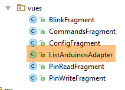 |
The [ListArduinosAdapter] class is the class called by the [ListView] to display each item in the Arduino list. Its code is as follows:
package istia.st.android.vues;
import istia.st.android.R;
...
public class ListArduinosAdapter extends ArrayAdapter<CheckedArduino> {
// the array of Arduinos
private List<CheckedArduino> arduinos;
// the runtime context
private Context context;
// the layout ID for a row in the Arduino list
private int layoutResourceId;
// whether the row contains a checkbox
private Boolean selectable;
// constructor
public ListArduinosAdapter(Context context, int layoutResourceId, List<CheckedArduino> arduinos, Boolean selectable) {
// parent
super(context, layoutResourceId, arduinos);
// store the data
this.arduinos = arduinos;
this.context = context;
this.layoutResourceId = layoutResourceId;
this.selectable = selectable;
}
@Override
public View getView(final int position, View convertView, ViewGroup parent) {
...
}
}
- line 18: the class constructor takes four parameters: the currently running activity, the ID of the view to display for each item in the data source, the data source that populates the list, and a boolean indicating whether the checkbox associated with each Arduino should be displayed or not;
- Lines 8–15: These four pieces of information are stored locally;
Line 29: The [getView] method is responsible for generating view #[position] in the [ListView] and handling its events. Its code is as follows:
@Override
public View getView(int position, View convertView, ViewGroup parent) {
// the current Arduino
final CheckedArduino arduino = arduinos.get(position);
// create the current line
View row = ((Activity) context).getLayoutInflater().inflate(layoutResourceId, parent, false);
// retrieve references to the [TextView]
TextView txtArduinoId = (TextView) row.findViewById(R.id.txt_arduino_id);
TextView txtArduinoDesc = (TextView) row.findViewById(R.id.txt_arduino_description);
// populate the row
txtArduinoId.setText(arduino.getId());
txtArduinoDesc.setText(arduino.getDescription());
// The CheckBox is not always visible
CheckBox ck = (CheckBox) row.findViewById(R.id.checkBoxArduino);
ck.setVisibility(selectable ? View.VISIBLE : View.INVISIBLE);
if (selectable) {
// Set its value
ck.setChecked(arduino.isChecked());
// handle the click
ck.setOnCheckedChangeListener(new OnCheckedChangeListener() {
public void onCheckedChanged(CompoundButton buttonView, boolean isChecked) {
arduino.setChecked(isChecked);
}
});
}
// return the row
return row;
}
- line 2: the first parameter is the position in the [ListView] of the line to be created. It is also the position in the locally stored list of Arduinos;
- line 4: we retrieve a reference to the Arduino that will be associated with the constructed row;
- line 6: the current row is constructed from the [listarduinos_item.xml] view;
- lines 8–9: references to the two [TextView]s are retrieved;
- lines 11-12: the two [TextView]s are assigned their values;
- line 14: a reference to the checkbox is retrieved;
- line 15: it is made visible or not, depending on the [selectable] value initially passed to the constructor;
- line 16: if the checkbox is present;
- line 18: the [isChecked] value of the current Arduino is assigned to it;
- lines 20–26: we handle the click on the checkbox;
- line 23: the value of the checkbox is stored in the current Arduino;
Managing the list of Arduinos
The display of the Arduino list is currently handled by two methods of the [ConfigFragment] class:
- [clearArduinos]: which displays an empty list;
- [showArduinos]: which displays the list returned by the server;
These two methods work as follows:
// Clear the list of Arduinos
private void clearArduinos() {
// Display an empty list
ListArduinosAdapter adapter = new ListArduinosAdapter(getActivity(), R.layout.listarduinos_item, new ArrayList<CheckedArduino>(), false);
listArduinos.setAdapter(adapter);
}
// Display list of Arduinos
private void showArduinos(List<CheckedArduino> checkedArduinos) {
// display the Arduinos
ListArduinosAdapter adapter = new ListArduinosAdapter(getActivity(), R.layout.listarduinos_item, checkedArduinos, false);
listArduinos.setAdapter(adapter);
}

5.6.10.5. The session
The session is where we store the information shared between the fragments and the activity. All fragments need to display the list of connected Arduinos. So, an initial version of the session would look like this:
package client.android.architecture.custom;
import client.android.activity.CheckedArduino;
import client.android.architecture.core.AbstractSession;
import java.util.ArrayList;
import java.util.List;
public class Session extends AbstractSession {
// data to be shared between fragments themselves and between fragments and the activity
// Elements that cannot be serialized to JSON must have the @JsonIgnore annotation
// Don't forget the getters and setters needed for JSON serialization/deserialization
// the list of Arduinos
private List<CheckedArduino> checkedArduinos = new ArrayList<>();
// getters and setters
...
}
Creating this session requires us to modify the existing code as follows:
// display response
private void consumeArduinosResponse(Response<List<Arduino>> response) {
// error?
if (response.getStatus() != 0) {
// display
showAlert(response.getMessages());
// cancel
cancel();
// return to UI
return;
}
// create a list of [CheckedArduino]
List<CheckedArduino> checkedArduinos = new ArrayList<>();
for (Arduino arduino : response.getBody()) {
checkedArduinos.add(new CheckedArduino(arduino, false));
}
// Set it in the session
session.setCheckedArduinos(checkedArduinos);
// display them
showArduinos(checkedArduinos);
// cancel the wait
cancelWaitingTasks();
}
- line 18: the list of Arduinos created by the previous lines is placed in the session;
5.6.10.6. Fragment state management
When the device is rotated, the view’s visual components are rendered (by default) in the state they were in when the view was designed:
- the [ListView] contains the items the designer placed there;
- the error message is in the visible or non-visible state in which the designer placed it;
The states of the visual components at design time may or may not be appropriate when restoring a fragment. What is the case here?
- the [ListView] must display the list of connected Arduinos. The value of the [ListView] at design time cannot therefore be used;
- The [TextView] for the error message must be restored to the visible or hidden state it had at the time of saving. Its value at design time may not be suitable for these two cases;
We must therefore save the state of these two components when saving the fragment’s state:
- the list of connected Arduinos;
- the visibility (shown/hidden) of the error message when entering the web service URL/JSON;
Since the list of Arduinos is present in the session, it will be automatically saved. The visibility of the error message will be stored in the following [ConfigFragmentState] class:

|
package client.android.fragments.state;
import client.android.architecture.custom.CoreState;
public class ConfigFragmentState extends CoreState {
// error message visibility
private boolean txtMsgErrorUrlServiceRestVisible;
// getters and setters
...
}
To correctly restore the states of the fragments, their [getNumView] and [saveFragment] methods must be modified. For example, the one for the [BlinkFragment] fragment is currently as follows:
@Override
public CoreState saveFragment() {
// the fragment must be saved
DummyFragmentState state = new DummyFragmentState();
// ...
return state;
// if there is nothing to save, use [return new CoreState();] and remove the [DummyFragmentState] class
}
@Override
protected int getNumView() {
// Return the fragment number in the array of fragments managed by the activity (see MainActivity)
return 0;
}
If nothing is done, the state rendered on line 6 will be saved in element 0 (line 13) of the CoreState[] coreStates array of the [AbstractSession] class (line 5 below):
public class AbstractSession implements ISession {
...
// view state
private CoreState[] coreStates = new CoreState[0];
...
However, it must be saved in the element corresponding to the fragment ID [BlinkFragment] in the fragment array defined in the [MainActivity] class (line 9 below):
@EActivity
@OptionsMenu(R.menu.menu_main)
public class MainActivity extends AbstractActivity {
...
@Override
protected AbstractFragment[] getFragments() {
return new AbstractFragment[]{new ConfigFragment_(), new BlinkFragment_(), new PinReadFragment_(), new PinWriteFragment_(), new CommandsFragment_()};
}
The fragment IDs have been defined in the [IMainActivity] interface:
public interface IMainActivity extends IDao {
...
// view numbers
int VIEW_CONFIG = 0;
int VIEW_BLINK = 1;
int VIEW_PINREAD = 2;
int VIEW_PINWRITE = 3;
int VIEW_COMMANDS = 4;
}
Ultimately, the state of the [BlinkFragment] fragment will be managed correctly if we write:
@Override
public CoreState saveFragment() {
// the fragment must be saved
DummyFragmentState state = new DummyFragmentState();
// ...
return state;
// if there is nothing to save, use [return new CoreState();] and remove the [DummyFragmentState] class
}
@Override
protected int getNumView() {
// Return the fragment ID in the array of fragments managed by the activity (see MainActivity)
return IMainActivity.VUE_BLINK;
}
- Line 14: Returns the fragment ID [BlinkFragment] in the array of fragments managed by the activity;
Furthermore, the [CoreState] class, which is the parent of the fragment states, is currently as follows (see section 5.6.7.2):
package client.android.architecture.custom;
import client.android.architecture.core.MenuItemState;
import client.android.fragments.state.*;
import com.fasterxml.jackson.annotation.JsonIgnoreProperties;
import com.fasterxml.jackson.annotation.JsonSubTypes;
import com.fasterxml.jackson.annotation.JsonTypeInfo;
@JsonIgnoreProperties(ignoreUnknown = true)
@JsonTypeInfo(use = JsonTypeInfo.Id.NAME, include = JsonTypeInfo.As.PROPERTY)
@JsonSubTypes({
@JsonSubTypes.Type(value = ConfigFragmentState.class),
@JsonSubTypes.Type(value = BlinkFragmentState.class),
@JsonSubTypes.Type(value = PinReadFragmentState.class),
@JsonSubTypes.Type(value = PinWriteFragmentState.class),
@JsonSubTypes.Type(value = CommandsFragmentState.class)}
)
public class CoreState {
// fragment visited or not
protected boolean hasBeenVisited = false;
// state of the fragment's menu (if any)
protected MenuItemState[] menuOptionsState;
// getters and setters
....
}
- Lines 12–16: The [DummyFragmentState] class is not listed among the child classes of the [CoreState] class. However, the [saveFragment] method of the [BlinkFragment] class currently returns a [DummyFragmentState] type. If left as is, the serialization/deserialization of the session will fail and the session will not be restored, leading to an application crash;
The [saveFragment] method of the [BlinkFragment] fragment must be rewritten as follows:
@Override
public CoreState saveFragment() {
// the fragment must be saved
BlinkFragmentState state = new BlinkFragmentState();
// ...
return state;
// if there is nothing to save, do [return new CoreState();] and remove the [DummyFragmentState] class
}
5.6.10.7. Fragment Lifecycle Management
Here we focus on the lifecycle of the [ConfigFragment] fragment, specifically the four methods:
- [saveFragment]: must save the fragment’s state so it can be restored later;
- [initFragment]: which must initialize certain fields of the fragment if necessary. This method is called when the application starts and every time the device is rotated. More precisely, it is called when the fragment becomes visible after one of the two preceding events;
- [initView]: which must initialize certain view components if necessary. This method is called every time [initFragment] has been called and when the view must be redrawn because the fragment has, at some point, moved out of the vicinity of the displayed fragment. As before, it is called when the fragment becomes visible after one of these events;
- [updateOnRestore]: which is executed after the two previous methods when the device has been rotated, but also when navigation has occurred. Its role is to restore the fragment’s previous state;
These methods will be as follows:
// Arduino list adapter
private ListArduinosAdapter adapterListArduinos;
...
// fragment lifecycle management -------------------------------------
@Override
public CoreState saveFragment() {
ConfigFragmentState state = new ConfigFragmentState();
state.setTxtMsgErreurUrlServiceRestVisible(txtMsgErreurUrlServiceRest.getVisibility() == View.VISIBLE);
return state;
}
@Override
protected void initFragment(CoreState previousState) {
// listArduinos adapter
adapterListArduinos = new ListArduinosAdapter(activity, R.layout.listarduinos_item, session.getCheckedArduinos(), false);
}
@Override
protected void initView(CoreState previousState) {
// Link listview to adapter
listArduinos.setAdapter(adapterListArduinos);
// First visit?
if (previousState == null) {
// Empty ListView - created by [initFragment]
// hide error message
txtMsgErreurUrlServiceRest.setVisibility(View.INVISIBLE);
} else {
// Restore visibility of the error message
ConfigFragmentState state = (ConfigFragmentState) previousState;
txtMsgErreurUrlServiceRest.setVisibility(state.isTxtMsgErreurUrlServiceRestVisible() ? View.VISIBLE : View.INVISIBLE);
}
}
@Override
protected void updateOnSubmit(CoreState previousState) {
}
@Override
protected void updateOnRestore(CoreState previousState) {
}
@Override
protected void notifyEndOfUpdates() {
// buttons
initButtons();
}
- line 2: the ListView adapter for the Arduinos. It is a global variable because it is used in different methods;
- lines 7–12: the [saveFragment] method saves the visibility of the TextView txtMsgErreurUrlServiceRestVisible (line 10) to a [ConfigFragmentState] type;
- lines 14–19: the [initFragment] method initializes the adapter from line 2 with the list of Arduinos currently in the session (line 17). Note that the role of [initFragment] is to initialize the fragment’s fields. Here, this initialization must be performed in all cases, whether it is the first visit (previousState == null) or not;
- line 17: we see that the adapter is bound to the data source [session.getCheckedArduinos]. This must not have the value null. For this reason, the field [session.checkedArduinos] is initialized with an empty list in the session:
// the list of Arduinos private List<CheckedArduino> checkedArduinos = new ArrayList<>(); - lines 21–35: the [initView] method is responsible for initializing certain components of the visual interface, particularly those whose values are not preserved when the device is rotated;
- line 24: the Arduino ListView is bound to the adapter from line 2;
- lines 28–32: the first visit is distinguished from other visits;
- line 29: on the first visit, an empty [ListView] must be displayed. This is the case because, on the first visit, the [ListView] adapter was associated with an empty list (line 17);
- line 31: the error message is hidden;
- lines 32–36: the case where this is not the first visit;
- the [ListView] is already in the correct state from line 24. There is nothing more to do;
- lines 34–35: the error message is restored to the state it was in when the fragment was last saved;
- lines 31–36: the [updateOnRestore] method must restore the fragment to its initial state. We reach the [updateOnRestore] method in two ways:
- either because the device has been rotated. In this case, all necessary initializations have already been performed in [initView];
- either because we are navigating from a tab to the [Config] tab. If the [Config] fragment has left the vicinity of the displayed fragments since we left it, the [initView] method has already been executed and the fragment is already in the desired state. If the [Config] fragment has not left the list of displayed fragments since it was exited, its visual components have not changed state and there is nothing to do;
We see that the [updateOnRestore] method has nothing to do. This is sometimes the case, sometimes not. The difference comes from the [updateOnSubmit] method: if this method does something that renders certain initializations made in [initView] unnecessary, then those initializations should be done in the [updateOnRestore] method. Let’s take the example of a radio button with three values: V1, V2, and V3. Perhaps in the case of navigation associated with a [SUBMIT] action, the selected radio button must always be the one with value V1. In this case, restoring the radio button’s value in the [initView] method is unnecessary, because in the case of a [SUBMIT], this value will be replaced by the one provided by the [updateOnSubmit] method. It is therefore preferable to move this restoration to the [updateOnRestore] method to avoid performing an unnecessary operation.
- lines 48–52: the [notifyEndOfUpdates] method is executed after all the preceding ones;
- Line 51: The buttons are set to their initial state: the [Refresh] button is displayed, and the [Cancel] button is hidden:
5.6.10.8. Code Improvement
The code for the [ConfigFragment] fragment can be improved. For example, we wrote:
// Arduino list adapter
private ListArduinosAdapter adapterListArduinos;
...
// display Arduino list
private void showArduinos(List<CheckedArduino> checkedArduinos) {
// display the Arduinos
ListArduinosAdapter adapter = new ListArduinosAdapter(getActivity(), R.layout.listarduinos_item, checkedArduinos, false);
listArduinos.setAdapter(adapter);
}
// Clear the list of Arduinos
private void clearArduinos() {
// display an empty list
ListArduinosAdapter adapter = new ListArduinosAdapter(getActivity(), R.layout.listarduinos_item, new ArrayList<CheckedArduino>(), false);
listArduinos.setAdapter(adapter);
}
- We can see that in lines 9 and 16, we are using a local variable that is disconnected from the field in line 2, even though we are trying to manipulate the same entity;
We update the code as follows:
// adapter for the list of Arduinos
private ListArduinosAdapter adapterListArduinos;
@Click(R.id.btn_Rafraichir)
protected void doRefresh() {
...
}
private void getArduinosInBackground() {
...
// process it
consumeArduinosResponse(response);
}
// display response
private void consumeArduinosResponse(Response<List<Arduino>> response) {
// error?
if (response.getStatus() != 0) {
// display
showAlert(response.getMessages());
// cancel
doCancel();
// return to UI
return;
}
// create a list of [CheckedArduino]
List<CheckedArduino> checkedArduinos = session.getCheckedArduinos();
checkedArduinos.clear();
for (Arduino arduino : response.getBody()) {
checkedArduinos.add(new CheckedArduino(arduino, false));
}
// display them
adapterListArduinos.notifyDataSetChanged();
// Cancel the wait
cancelWaitingTasks();
}
@Override
protected void initFragment(CoreState previousState) {
// listArduinos adapter
listArduinosAdapter = new ListArduinosAdapter(activity, R.layout.listarduinos_item, session.getCheckedArduinos(), false);
}
@Override
protected void initView(CoreState previousState) {
// bind listview / adapter
listArduinos.setAdapter(adapterListArduinos);
...
}
- When the method on line 5 is executed, the fragment's lifecycle has been completed. Therefore:
- the adapter on line 2 has been associated with its data source (line 41);
- the [ListView] of the connected Arduinos has been linked to this adapter (line 48);
When we want to change the display of the [ListView], we need to do two things:
- change the contents of the data source [session.checkedArduinos];
- notify the adapter of this change using the [adapterListArduinos.notifyDataSetChanged()] instruction;
It is important to change the content of the data source, not the data source itself. If we change the data source itself, the operation [adapterListArduinos.notifyDataSetChanged()] will continue to display the old data source. We would then need to associate the adapter with the new data source.
The code is as follows:
- line 27: we retrieve the data source;
- line 28: we clear it. For this reason, we have removed the [clearArduinos] method;
- lines 29–31: we add new items to this now-empty list;
- line 33: we tell the adapter to refresh. This will refresh the display of the associated [ListView];
5.6.11. Communication between views
To verify communication between views, we will have all the other views display the list of Arduinos obtained by the [Config] view. Let’s start with the [blink.xml] view. Whereas it previously displayed nothing, it will now display the list of connected Arduinos:


|
The XML code for the [blink.xml] view will be as follows:
<?xml version="1.0" encoding="utf-8"?>
<ScrollView xmlns:android="http://schemas.android.com/apk/res/android"
android:id="@+id/scrollView1"
android:layout_width="wrap_content"
android:layout_height="wrap_content">
<?xml version="1.0" encoding="utf-8"?>
<RelativeLayout xmlns:android="http://schemas.android.com/apk/res/android"
xmlns:tools="http://schemas.android.com/tools"
android:id="@+id/RelativeLayout1"
android:layout_width="match_parent"
android:layout_height="match_parent">
<TextView
android:id="@+id/txt_arduinos"
android:layout_width="wrap_content"
android:layout_height="wrap_content"
android:layout_alignParentLeft="true"
android:layout_marginTop="150dp"
android:text="@string/arduinos_list_title"
android:textColor="@color/blue"
android:textSize="20sp" />
<ListView
android:id="@+id/ListViewArduinos"
android:layout_width="match_parent"
android:layout_height="200dp"
android:layout_alignParentLeft="true"
android:layout_below="@+id/txt_arduinos"
android:layout_marginTop="30dp"
android:background="@color/wheat">
</ListView>
</RelativeLayout>
</ScrollView>
This code was taken directly from the [config.xml] view. We simply modified the top margin on line 19.
The code for the [BlinkFragment] fragment associated with the [blink.xml] view is also changing:

|
// visual components
@ViewById(R.id.ListViewArduinos)
protected ListView listArduinos;
// Arduino list adapter
private ListArduinosAdapter adapterListArduinos;
...
// methods required by the parent class -------------------------------------------------------
...
@Override
protected void initFragment(CoreState previousState) {
// listArduinos adapter
adapterListArduinos = new ListArduinosAdapter(activity, R.layout.listarduinos_item, session.getCheckedArduinos(), true);
}
@Override
protected void initView(CoreState previousState) {
// Link listview / adapter
listArduinos.setAdapter(adapterListArduinos);
}
...
- lines 2-3: the [ListView] component for the connected Arduinos;
- line 6: the adapter for this [ListView];
- lines 12-23: the code for the [initFragment] and [initView] methods is the same as that already used for the [ConfigFragment] fragment;
- line 15: when the fragment needs to be reset, we reset the adapter from line 2 by associating it with the list of Arduinos stored in the session. The last parameter [true] of the [ListArduinosAdapter] constructor means that we want to see a checkbox next to each Arduino;
- line 22: when the fragment’s view needs to be reset, we bind the [ListView] of connected Arduinos to the adapter from line 6;
Note: The reason the Arduinos remain checked is as follows. The [ListArduinosAdapter] class was introduced in Section 5.6.10.4. The code related to the checkbox is as follows:
// the current Arduino
final CheckedArduino arduino = arduinos.get(position);
...
// the CheckBox is not always visible
CheckBox ck = (CheckBox) row.findViewById(R.id.checkBoxArduino);
ck.setVisibility(selectable ? View.VISIBLE : View.INVISIBLE);
if (selectable) {
// set its value
ck.setChecked(arduino.isChecked());
// handle the click
ck.setOnCheckedChangeListener(new OnCheckedChangeListener() {
public void onCheckedChanged(CompoundButton buttonView, boolean isChecked) {
arduino.setChecked(isChecked);
}
});
}
- Lines 11–15: If a checkbox is checked in tab X, the [checked] property of the Arduino in row 2 is set to true (line 14);
- when switching to tab Y, the [ListView] of the Arduinos in that tab is displayed. In line 9, we see that if the Arduino in row 2 has its [checked] property set to true, then the [ck] checkbox in row 5 will be checked;
5.6.12. The [DAO] layer
|
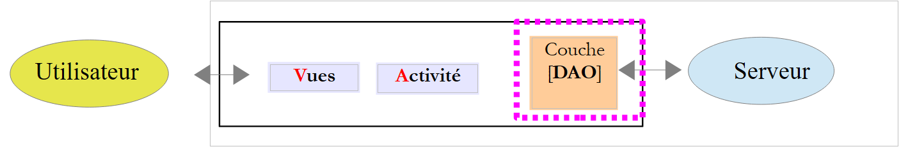 |
Note: For this section, review the implementation of the [DAO] layer in the [example-16B] project (see section 2.8.3).
So far, we have manually generated the list of connected Arduinos. We will now request it from the web server / jSON. To do this, we will build the [DAO] layer:

|
5.6.12.1. The IDao interface
The [IDao] interface of the [DAO] layer will be as follows:
package client.android.dao.service;
import client.android.dao.entities.Arduino;
import client.android.dao.entities.Response;
import rx.Observable;
import java.util.List;
public interface IDao {
// Web service URL
void setWebServiceJsonUrl(String url);
// User
void setUser(String user, String password);
// Client timeout
void setTimeout(int timeout);
// Basic authentication
void setBasicAuthentication(boolean isBasicAuthenticationNeeded);
// debug mode
void setDebugMode(boolean isDebugEnabled);
// client wait time in milliseconds before request
void setDelay(int delay);
// specific ----------------------------------------
// list of Arduinos
Observable<Response<List<Arduino>>> getArduinos();
}
- lines 11-26: these lines are already present in the [IDao] interface of the [client-android-skel] template project;
- line 30: the [getArduinos] method returns the list of connected Arduinos as an observable of type Observable<[Response<List<Arduino>>>] ;
Note that [Response<T>] is the type of all responses sent by the server in the form of a JSON string:
package client.android.dao.entities;
import java.util.List;
public class Response<T> {
// ----------------- properties
// operation status
private int status;
// any error messages
private List<String> messages;
// response body
private T body;
// constructors
public Response() {
}
public Response(int status, List<String> messages, T body) {
this.status = status;
this.messages = messages;
this.body = body;
}
// getters and setters
...
}
5.6.12.2. The [WebClient] interface
|
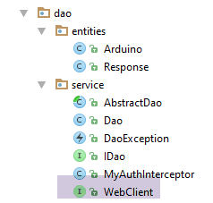 |
The [WebClient] interface is an interface for which the AA library provides an implementation. This interface will be as follows:
package client.android.dao.service;
import client.android.dao.entities.Arduino;
import client.android.dao.entities.Response;
import org.androidannotations.rest.spring.annotations.Get;
import org.androidannotations.rest.spring.annotations.Path;
import org.androidannotations.rest.spring.annotations.Rest;
import org.androidannotations.rest.spring.api.RestClientRootUrl;
import org.androidannotations.rest.spring.api.RestClientSupport;
import org.springframework.http.converter.json.MappingJackson2HttpMessageConverter;
import org.springframework.web.client.RestTemplate;
import java.util.List;
@Rest(converters = {MappingJackson2HttpMessageConverter.class})
public interface WebClient extends RestClientRootUrl, RestClientSupport {
// RestTemplate
void setRestTemplate(RestTemplate restTemplate);
// specific --------------------------------------
// list of Arduinos
@Get("/arduinos")
Response<List<Arduino>> getArduinos();
}
- lines 15-19: these lines are included by default in the [WebClient] interface of the [client-android-skel] template project;
- line 23: the server URL used to retrieve the list of Arduinos via a GET request. Note that this URL is relative to the root URL [RestClientRootUrl] on line 16;
- line 24: the server returns a JSON string of type [Response<List<Arduino>>]. This JSON string is automatically deserialized into the [Response<List<Arduino>>] type using the JSON converter [MappingJackson2HttpMessageConverter] from line 15;
5.6.12.3. The [Dao] class
The [Dao] class implements the [IDao] interface as follows:
package client.android.dao.service;
import android.util.Log;
import client.android.dao.entities.Arduino;
import client.android.dao.entities.Response;
import org.androidannotations.annotations.AfterInject;
import org.androidannotations.annotations.Bean;
import org.androidannotations.annotations.EBean;
import org.androidannotations.rest.spring.annotations.RestService;
import org.springframework.http.client.ClientHttpRequestInterceptor;
import org.springframework.http.client.SimpleClientHttpRequestFactory;
import org.springframework.http.converter.json.MappingJackson2HttpMessageConverter;
import org.springframework.web.client.RestTemplate;
import rx.Observable;
import java.util.ArrayList;
import java.util.List;
@EBean(scope = EBean.Scope.Singleton)
public class Dao extends AbstractDao implements IDao {
// Web service client
@RestService
protected WebClient webClient;
// security
@Bean
protected MyAuthInterceptor authInterceptor;
// the RestTemplate
private RestTemplate restTemplate;
// RestTemplate factory
private SimpleClientHttpRequestFactory factory;
@AfterInject
public void afterInject() {
// log
Log.d(className, "afterInject");
// create the RestTemplate
factory = new SimpleClientHttpRequestFactory();
restTemplate = new RestTemplate(factory);
// Set the JSON converter
restTemplate.getMessageConverters().add(new MappingJackson2HttpMessageConverter());
// Set the RestTemplate for the web client
webClient.setRestTemplate(restTemplate);
}
@Override
public void setUrlServiceWebJson(String url) {
// Set the web service URL
webClient.setRootUrl(url);
}
@Override
public void setUser(String user, String password) {
// Register the user in the interceptor
authInterceptor.setUser(user, password);
}
@Override
public void setTimeout(int timeout) {
if (isDebugEnabled) {
Log.d(className, String.format("setTimeout thread=%s, timeout=%s", Thread.currentThread().getName(), timeout));
}
// configuration factory
factory.setReadTimeout(timeout);
factory.setConnectTimeout(timeout);
}
@Override
public void setBasicAuthentication(boolean isBasicAuthenticationNeeded) {
if (isDebugEnabled) {
Log.d(className, String.format("setBasicAuthentication thread=%s, isBasicAuthenticationNeeded=%s", Thread.currentThread().getName(), isBasicAuthenticationNeeded));
}
// authentication interceptor?
if (isBasicAuthenticationNeeded) {
// add the authentication interceptor
List<ClientHttpRequestInterceptor> interceptors = new ArrayList<ClientHttpRequestInterceptor>();
interceptors.add(authInterceptor);
restTemplate.setInterceptors(interceptors);
}
}
// private methods -------------------------------------------------
private void log(String message) {
if (isDebugEnabled) {
Log.d(className, message);
}
}
// Specific IDao implementation -----------------------------------------------
@Override
public Observable<Response<List<Arduino>>> getArduinos() {
// web client execution
return getResponse(new IRequest<Response<List<Arduino>>>() {
@Override
public Response<List<Arduino>> getResponse() {
return webClient.getArduinos();
}
});
}
}
- lines 19–87: these lines are part of the [Dao] class in the [client-android-skel] project;
- lines 91–100: implementation of the [getArduinos] method;
- line 94: the [getResponse] method of the parent class is called. The only parameter of this method is an instance of the [IRequest<T>] interface;
- lines 95-99: the only method of the [IRequest<T>] interface is the [T getResponse()] method;
- line 94: the type T of [IRequest<T>] must be the type T of the Observable<T> result of the method on line 92, so here, a type [Response<List<Arduino>>];
- line 97: the method [IRequest.getResponse()] delegates the work to the method [webClient.getArduinos()] that we introduced. [webClient], defined on line 24, is instantiated by the AA library and is an instance of the [WebClient] interface that we introduced;
5.6.13. The [MainActivity]

|
We have already introduced the [MainActivity] activity in Section 5.6.8. It extends the [AbstractActivity] class and, as such, implements the [IMainActivity] interface, which itself extends the [IDao] interface. Whenever a method is added to the [IDao] interface, it must be implemented in the [MainActivity] class. The [IDao.getArduinos] method added to the [IDao] interface will be implemented as follows in [MainActivity]:
...
@EActivity
@OptionsMenu(R.menu.menu_main)
public class MainActivity extends AbstractActivity {
// [DAO] layer
@Bean(Dao.class)
protected IDao dao;
// session
private Session session;
...
// IDao implementation -----------------------------------------
@Override
public Observable<Response<List<Arduino>>> getArduinos() {
return dao.getArduinos();
}
}
- lines 15–18: the [getArduinos] method is implemented by delegating the work to the [Dao] class that we just introduced and to which we have a reference on line 8;
5.6.14. The [ConfigFragment] fragment revisited
In the [ConfigFragment] class, the code executed when the [Refresh] button is clicked is currently as follows:
@Click(R.id.btn_Rafraichir)
protected void doRefresh() {
...
// request the list of Arduinos in the background
getArduinosInBackground();
}
private void getArduinosInBackground() {
// Create a dummy list of Arduinos
List<Arduino> arduinos = new ArrayList<>();
for (int i = 0; i < 20; i++) {
arduinos.add(new Arduino("id" + i, "desc" + i, "mac" + i, "ip" + i, i));
}
// Simulate a server response
Response<List<Arduino>> response = new Response<>();
response.setBody(arduinos);
// we consume it
consumeArduinosResponse(response);
}
// display response
private void consumeArduinosResponse(Response<List<Arduino>> response) {
...
}
We need to rewrite lines 10–16, which hard-coded a response of type [Response<List<Arduino>>]. We now need to request this list from the [DAO] layer via the activity. The code becomes as follows:
@Click(R.id.btn_Rafraichir)
protected void doRefresh() {
// check the inputs
if (!pageValid()) {
return;
}
// save the input
mainActivity.setUrlServiceWebJson(urlServiceRest);
// prepare to wait
beginWaiting(1);
// execute the asynchronous task
executeInBackground(mainActivity.getArduinos(), new Action1<Response<List<Arduino>>>() {
@Override
public void call(Response<List<Arduino>> response) {
// process the response
consumeArduinosResponse(response);
}
});
}
- line 8: the root URL of the web service / JSON entered by the user is passed to the [DAO] layer via the activity. This will be the root URL of the [WebClient] interface (see section 5.6.12.2);
- line 10: the parent class is notified that an asynchronous task is about to be launched;
- lines 12–19: launch of the asynchronous task that will return the list of Arduinos connected to the server;
- line 12: call the [executeInBackground] method of the parent class. This method expects two parameters:
- line 12: the process to observe. This process is provided here by the [mainActivity.getArduinos()] method;
- lines 12–19: an instance of the [Action1<T>] interface, where the type T is the type provided by the process, here a [Response<List<Arduino>>] type;
- lines 14–18: the method called when the asynchronous task returns its result of type [Response<List<Arduino>>];
- line 17: the received response is passed to the previously written [consumeArduinosResponse] method;

- Enter the URL indicated in [1]. This is one of your server’s IP addresses;
- Click the [2] button;
- You should see the list of connected Arduinos in [3];
Verify that this list also appears in the other tabs.
5.7. Next Steps
The views to be created were presented in Section 5.5.
For each view, you must:
- draw the XML view (see Section 5.6.9);
- build the associated fragment (see Section 5.6.10);
- add a method to the [WebClient] interface (see Section 5.6.12.2);
- add a method to the [IDao] interface (see Section 5.6.12.2);
- add a method to the [Dao] class (see section 5.6.12.3);
- add a method to the [MainActivity] activity (see section 5.6.13);
- write the fragment's event handlers (see section 5.6.14);
- test and observe the logs;
Note 1: The example to follow is the [Example-16B] project from the course (see section 2.8.3).
Note 2: The URLs to be queried and the type of their responses were presented in section 5.4.2.
Note 3:
The [CommandsFragment] class sends a list containing a single command to be executed by one or more Arduinos. This command will be encapsulated in the following [ArduinoCommand] class:
package android.arduinos.dao;
import java.util.Map;
public class ArduinoCommand {
// data
private String id;
private String ac;
private Map<String, Object> pa;
// constructors
public ArduinoCommand() {
}
public ArduinoCommand(String id, String ac, Map<String, Object> pa) {
this.id = id;
this.ac = ac;
this.pa = pa;
}
// getters and setters
...
}
In the [WebClient] interface, the method to execute this list of commands will be as follows:
// sending JSON commands
@Post("/arduinos/commands/{idArduino}")
Response<List<ArduinoResponse>> sendCommands(@Body List<ArduinoCommand> commands, @Path String idArduino);
- line 2: the URL is requested with an HTTP POST request;
- line 3: the posted value must have the [@Body] annotation;
Note 4: It is recommended to approach this task as follows:
- only move on to the next view once the current view has been created and tested;
- only manage the state of the views after obtaining a functional application under normal conditions. Then, for each view, cycle through the device for different states of the view and note any lost information. This is the data that needs to be saved and then restored. Next, verify navigation: when you leave a tab and return to it later, it should be in the same state as when you left it;